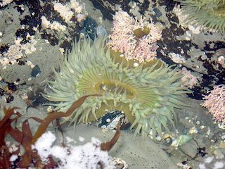
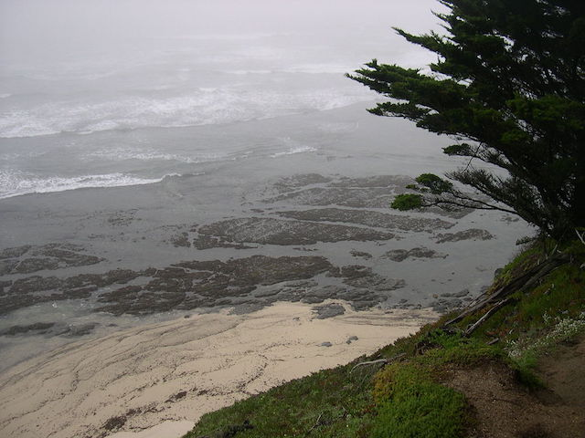

Introduction
Fitzgerald Marine Reserve is a marine reserve in California on the Pacific Ocean, located just north of Pillar Point Harbor and Mavericks in the San Mateo County community of Moss Beach. Moss Beach is located approximately 20 miles (32 km) south of San Francisco and 50 miles (80 km) north of Santa Cruz. The reserve is a 32-acre (0.13 km2) holding which extends from Montara light station at the north to Pillar Point on the south. The reserve consists of a three-mile stretch of beach, tidepool habitat, marsh, erosive bluffs, clifftop trail and cypress and eucalyptus forests. The property is owned by the State of California and managed by San Mateo County as a county park and nature preserve. The reserve is administratively assigned to be part of the Gulf of the Farallones National Marine Sanctuary. Adjacent to and possibly within the reserve is an endangered species of butterfly, the San Bruno elfin butterfly.
Montara State Marine Reserve & Pillar Point State Marine Conservation Area extend offshore from Montara, just north of Pillar Point. Like underwater parks, these marine protected areas help conserve ocean wildlife and marine ecosystems. Fitzgerald Marine Reserve lies within Montara State Marine Reserve.
History
The site of the current Fitzgerald Marine Reserve was originally settled by Native Americans approximately 5,800 years ago. In 1908, the Ocean Shore Railroad extended through the town of Moss Beach, effectively creating this location as a tourist destination. Remains of the foundation and some original landscape features from the Smith-Doelger homesite from the early-1900s may be found on the bluffs overlooking the Reserve.
The site has long been a source of research and materials for marine biologists and collectors, so much so that, in 1969, San Mateo County urged the State of California to designate the site as a state reserve to protect the remaining flora and fauna. On August 5, 1969 the site was officially designated as a state reserve and was named after James V. Fitzgerald, former mayor of San Bruno and a longtime member of the San Mateo County Board of Supervisors.